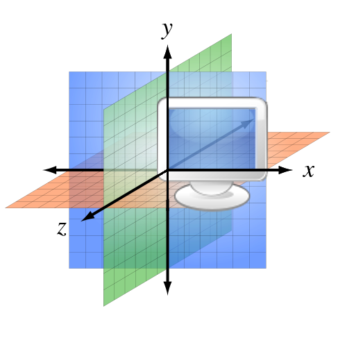
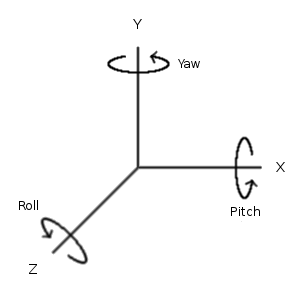

TBD. Some notes follow ...
triangles (dolphin), build/convert from tool, binding a single material (gray), xyz, position/orientation/scale (matrix), modularize in its own Acorn program resource
Space
Let's introduce some fundamental spatial concepts.
Xyz coordinates
The Xyz type creates a point (or vector) in three-dimensional space, specifying its x, y, and z coordinates:
Positive coordinates for x go right, for y go up, and for z come towards you from the screen (essentially in the direction of the labels for each axis). Going the opposite direction uses negative coordinates.
The Xyz type implements the arithmetic operators, allowing coordinates to be added, multiplied by a scalar number, etc.
Mesh
A mesh is a geometric shape in space built using Xyz points that are connected with each other into triangles.

All objects in your scene, including the terrain and sky, use a mesh to define their shape. The scene's earth uses a generated mesh for a sphere, segmented by longitude and latitude lines.
Typically, 3-D artists use sophisticated 3-D modeling tools, such as Blender, Maya, or 3DS Studio, to create a mesh. The resulting mesh file (typically not an Acorn program) can then be loaded as a resource.
Position, Rotation and Scaling
Every object in a scene can specify its position, rotation and scale with those properties:
- position
- This indicates the object's position relative to its owner's coordinates. So, if the earth is given a position of Xyz[40,0,0], then every point in its mesh has its Xyz position shifted to the right by 40.
- rotation
- This indicates the object's orientation in space, relative to its owner.
The rotation is specified as pitch, yaw and roll, specified as radians
(where 2*pi is equivalent to 360 degrees):

The positive direction for each rotation is determined by the right-hand rule: point the thumb of your right hand in the positive direction of an axis, and your fingers will curl in the positive direction for that rotation.
- scale
- This indicates how much to magnify (or reduce) the object, relative to its owner. A scaling of Xyz[2.0, 2.0, 2.0) would double an object's size.
Let's say that you combined several objects together into a Group. Changing the position, rotation or scale of the group would affect all objects in that group.
As a fun exercise, trying adding more planets to the scene, experimenting with various positions, rotations and scalings.